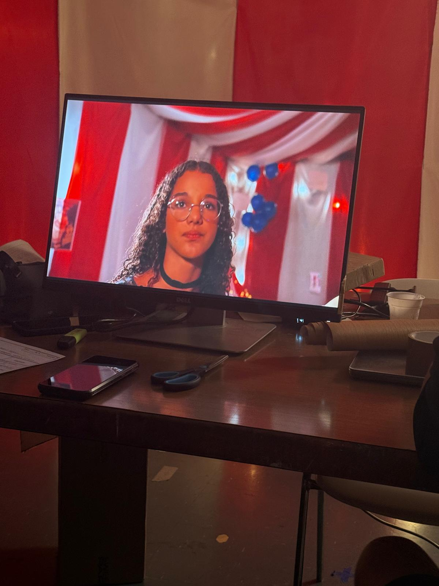
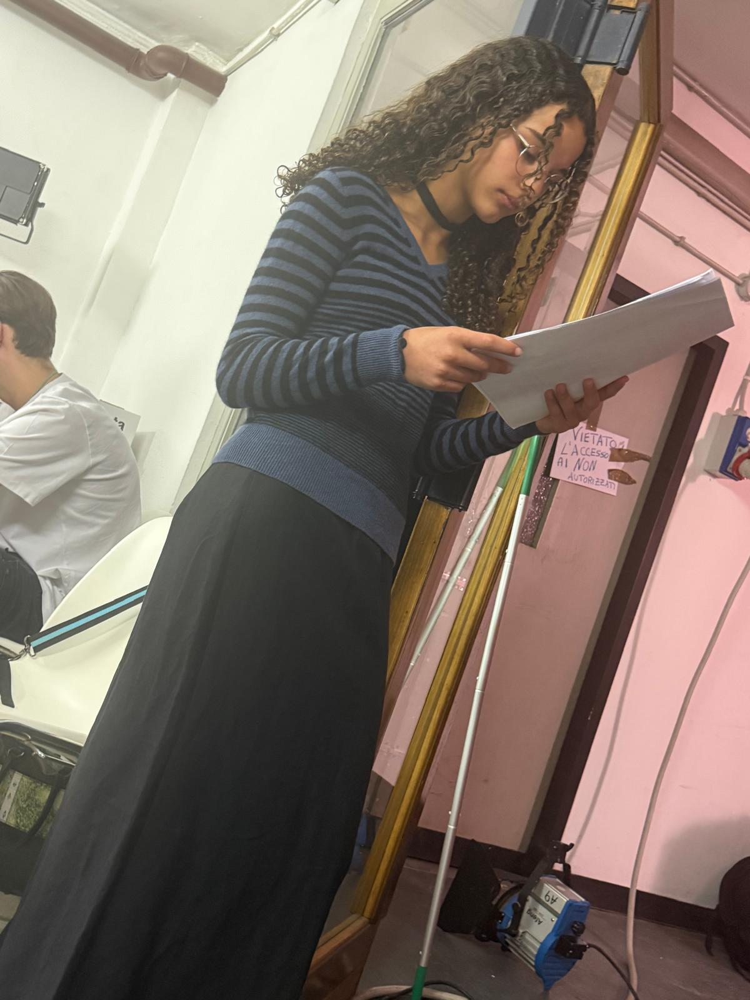
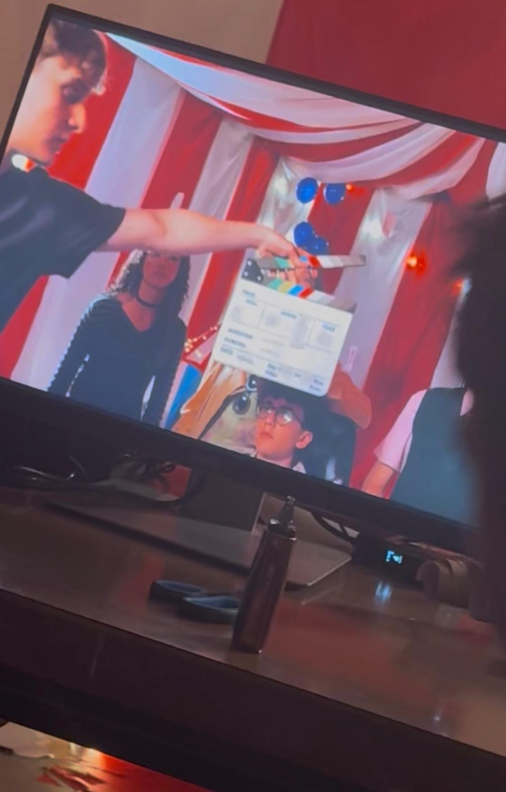
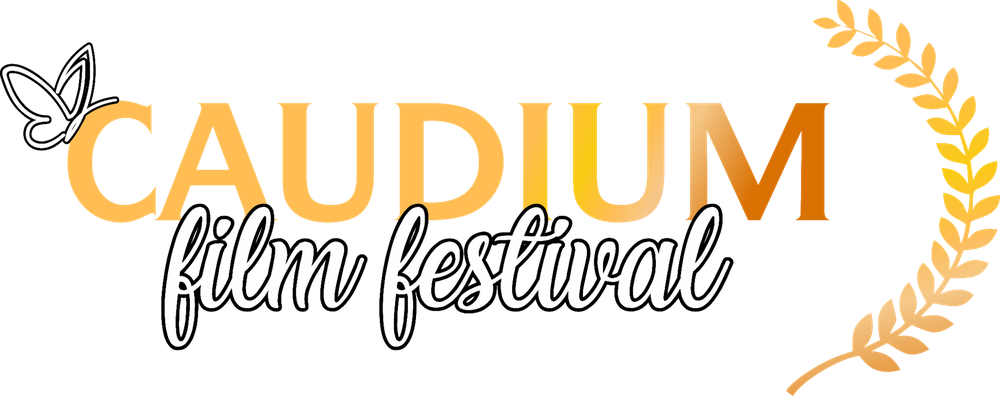
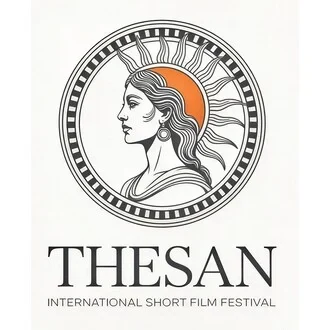

“Spettro – Un altro modo di pensare” è un cortometraggio che affronta il tema dell'autismo attraverso un linguaggio simbolico e immediato. La storia segue il primo giorno di scuola di un ragazzo che deve affrontare un ambiente nuovo, nuove persone e situazioni ancora tutte da conoscere.
Quello che mi ha colpito del progetto è il modo in cui le emozioni vengono rese visibili: paura, incertezza, ricordi e cambiamenti prendono forma e diventano parte del racconto.
Un mondo raccontato attraverso le emozioni
Nel mondo interiore del protagonista le emozioni diventano veri e propri personaggi. Il meccanismo narrativo richiama l'idea delle emozioni personificate resa popolare da Inside Out, ma viene rielaborato per raccontare il tema dello spettro autistico da un punto di vista originale.
Alla console c'è Spettro, una figura simbolica che rappresenta un diverso modo di percepire, elaborare e affrontare ciò che succede intorno al protagonista.
Il mio ruolo: Tristezza
Nel cortometraggio interpreto Tristezza, una delle emozioni che accompagnano il protagonista durante questa giornata così importante.

Le mie battute accompagnano uno dei passaggi più delicati del racconto: mentre il protagonista pensa a ciò che sta per affrontare, riaffiorano nella sua mente i giorni della scuola media, ormai trascorsi. Sono ricordi conosciuti e già vissuti, che acquistano un peso particolare perché davanti a lui c'è qualcosa di nuovo e ancora tutto da scoprire.
La tristezza nasce quindi anche dal distacco da una fase della vita che si chiude: ciò che era familiare sta cambiando e il protagonista deve prepararsi ad affrontare un nuovo ambiente, nuove persone e nuove abitudini.
Titolo: Spettro – Un altro modo di pensare
Formato: Cortometraggio
Il mio ruolo: Tristezza
Tema: Autismo e percezione del mondo
Il primo giorno di scuola
La storia comincia al mattino. Il protagonista si sveglia e deve prepararsi per affrontare il suo primo giorno di scuola.
È un momento che porta con sé emozioni comuni a molti ragazzi: l'incertezza, la paura di ciò che non si conosce e il timore di non riuscire a trovare subito il proprio posto. Per lui l'ingresso in un ambiente nuovo rende ogni passaggio ancora più intenso: cambia la routine, cambiano le persone, arrivano nuovi stimoli e situazioni difficili da prevedere.
Attraverso il dialogo tra le emozioni e Spettro, il cortometraggio prova ad accompagnare lo spettatore dentro questo primo giorno e dentro un punto di vista che, dall'esterno, può essere difficile comprendere.
Una giornata intensa sul set
Tutte le riprese sono state concentrate volutamente in una sola giornata. Costumi, trucco, preparazione delle scene e riprese si sono susseguiti con tempi molto serrati, trasformando la giornata in una piccola maratona di lavoro.
Anche la caratterizzazione di Tristezza era molto precisa: colori scuri e spenti, una lunga gonna nera a tubino e un maglioncino a righe nere e viola scuro. Il trucco era invece volutamente molto semplice, per lasciare spazio soprattutto alle espressioni e all'interpretazione.
La cosa particolare è stata proprio il contrasto tra il ritmo veloce del set e il carattere più raccolto del personaggio: mentre tutto intorno correva, Tristezza richiedeva misura, ascolto e un tono capace di restituire il senso di cambiamento vissuto dal protagonista.
Le fotografie del backstage raccontano proprio questa parte meno visibile: i copioni riletti prima del ciak, la preparazione, il set in movimento e il monitor da cui si controllano le scene mentre prendono forma.


Il percorso nei festival
Il percorso di “Spettro – Un altro modo di pensare” nei festival è iniziato con due importanti finali. Vedere il cortometraggio arrivare fino alle selezioni conclusive di due manifestazioni diverse è una soddisfazione speciale, soprattutto perché il progetto affronta un tema sociale attraverso un linguaggio semplice, simbolico ed emotivo.

Caudium Film Festival 2026
“Spettro – Un altro modo di pensare” è stato selezionato tra i 18 cortometraggi finalisti del Caudium Film Festival 2026.
Finalista · Top 18
Thesan International Short Film Festival 2026
Il cortometraggio è inoltre tra i 5 finalisti della Sezione Sociale del Thesan International Short Film Festival 2026.
Finalista · Sezione Sociale · Top 5Continuerò ad aggiornare questa pagina con gli sviluppi del percorso festivaliero, le eventuali proiezioni e i risultati quando potranno essere comunicati ufficialmente.